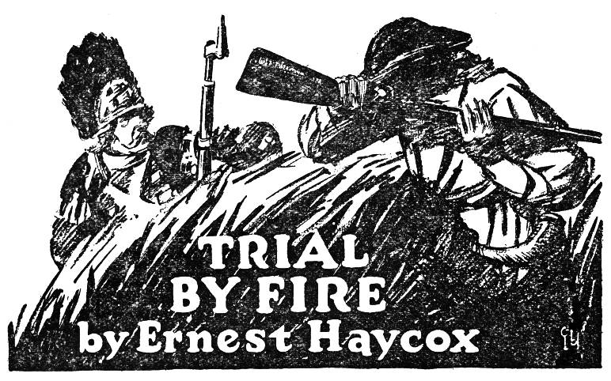

Doctor Brent was up early that morning on a call to the widow Potter’s, a mile or so down the road from his own house. In fact a very frightened young Potter grandson had come a-tapping on his door quite before dawn and brought him back to the fevered old lady. The doctor exercised his skill, waited for a more favorable sign from the patient and then, near breakfast, got upon his horse and returned slowly toward his own hearth, meditating a little upon the wonderful vitality of these simple-living New England people.
The day promised to be hot. There was in the air that forecast of sultriness not uncommon to June weather, and over in the direction of Boston town the sun hovered below the sea’s edge, striking upward with its blood-red rays. The doctor, rubbing his ruddy cheeks, wondered how Gage and his soldiers enjoyed their forced idleness in the town. His professional instinct led him to emit a small cluck of pity.
“Poor ——,” he murmured, bending in the saddle, “they’ll be sadly needing fresh foods. I doubt not there’s much scurvy and camp disease among them.”
Well, he mused, it was a great deal Gage’s own fault. He had permitted himself to be cooped up and surrounded by a half-organized patriot army. The doctor, whose opinions were staunchly Tory, frowned. He had thought this was going to be a stalemate and that after a time the farmers, collecting their better senses and cooling their rage following the affair of Lexington and Concord, would disperse and go back to their occupations. It was not so. Old Artemas Ward commanded an army of sixteen thousand men, stretched from Charlestown Neck to Dorchester way. And night before last there had been whisperings of a sortie against the British. The air seemed to have grown more charged with desperate possibilities in the forty-eight hours elapsing. It was murmured, too, that the Committee of Safety had come to a bold decision and had given Ward his moving orders. But where and when? From Medford to Roxbury the countryside was in a ferment of anticipation, and the tag ends of rumors and fears came back to the doctor in a most tantalizing and distressing form.
The horse quickened his pace. The doctor emerged from his thoughts and raised his head to perceive a strange sight along the road. It had grown quite light now, and the sun’s top quarter was above the horizon. Ahead of him in the road, raising the dust as they traveled, advanced a group of men. Not in formation, but in ones and twos and small parties; stringing along at greater and lesser intervals as far as the winding highway could be viewed. The doctor’s surprised eyes counted perhaps two score such, and momentarily he noted others straggling out of the farmhouses by the wayside, all setting their faces in the common direction.
What seemed stranger still was the equipment they carried. Each, so far down the road as Doctor Brent could distinguish, had some sort of game or provision pouch thrown over the shoulder. Each had his powder horn and cartridge box. In one hand was the inevitable musket. And as the foremost came upon the amazed doctor he saw that their countenances were almost uniformly patterned. Some seemed dourer than others and some seemed highly excited; he began to distinguish angry voices in the foremost group and mild voices. But all were of a resolved countenance, quite as if they had deliberated upon some course and made their minds in favor of it. Brent drew the horse aside and bent his attention to the first few.
“What’s this?” he demanded. “Where’s the drill to be so early in the morning?”
The conversation, he noticed with a touch of sorrow and wounded pride, ceased as they drew near. They stopped out of respect to his profession, and one or two touched their caps, not deferentially, but more as a courtesy long established and hard to forget. Yet one and all seemed strangely lacking in speech. Presently the first group was joined by others, and they, also, had nothing to offer the wondering Brent. He struck the side of his saddle and swore gruffly.
“Are you tongue-tied? ——, I know you—every mother’s son—as well as I know my name, and yet I can’t get a civil answer! What is all this fuss about? Where is the drill?”
At length one ventured to break the silence.
“Guess it ain’t a drill, Doctor. Other things afoot, maybe.”
“What, then?” asked Brent with a little sinking of heart. He knew that stubborn countenance and that mild speech of old. They would say little but think mightily. And it took a charge of powder to change their minds. “What, then?” he repeated after a long interval.
“Don’t know as I should tell you,” replied the speaker. “Ain’t aimin’ to be short with you, Doctor, but I don’t rightly guess you got a right to know.”
“Mystery—mummery,” retorted Brent, trying to break through the wall. “Are you taking on airs to me, sir?”
After another long and reluctant interval the man replied with the same soft-spoken doggedness.
“Why no, Doctor, that ain’t hardly right to say. But I don’t just guess I got a right to tell or you to know.”
A more reckless spirit had joined them.
“What’s the harm?” he demanded. “It’s daylight now. Guess the job’s been done. I ain’t afraid to tell that ’tarnal leech——”
There was an instant disapproval, and the bold one hushed.
“May be daylight and all that,” said the spokesman, “but it ain’t our part to talk. Leave the officers do that if they’re a mind to. Guess we’re only wasting time here, too.”
He nodded to the doctor and went on, followed by the augmented group.
Brent urged the horse homeward, his serenity ruffled, his pride touched. At short intervals he passed others; one and all they seemed reluctant to meet his eye, though he knew and called each by name. Ever since public opinion had crystallized, months ago, and sides had been taken, his patients and patriot neighbors had withdrawn their confidences from him, though not their ills. But not until now had they appeared so unwilling even to acknowledge him. They turned their faces away or they met his greeting in stony silence or with a muttered word that was no answer at all. And so he went on, gaining no information, but being constantly met with the selfsame rebuff. It only served to whet his curiosity, and at last when he came to his own house and saw Caleb Gorham, an old, infirm friend, hobbling along the road like the rest, he instantly got off his horse and protested.
“By Godfrey, I put you to bed yesterday and told you to stay there. What’s this foolishness?”
But his friend, too, had changed.
“Figger I’ll have to disobey those orders, Isaac.”
And he kept his way, face averted. Brent crossed the yard and took Gorham by the shoulders.
“See here, what in the name of sense is happening? Come in the house.”
“No, Isaac, it wouldn’t look just right for me to be goin’ in your house this partic’lar mornin’.”
Doctor Brent swore again.
“Caleb, I have not been ashamed to cross your doorsill and you shall not be ashamed to cross mine! Come. I’ll have an answer from someone.”
Gorham walked toward the door reluctantly, turning as one of his passing neighbors hailed him in reproof.
“You got other chores to do, Caleb.”
The old man nodded.
“Be there in a minute,” he answered, and entered the doctor’s house.
A small fire had been built in the hearth against the morning chill. The table was set and the cakes were steaming in the platter.
“Better eat with me,” suggested Brent. His wife came out of the pantry and he motioned at the table. “Another plate for Caleb.”
“No,” said Gorham firmly. “Ain’t got time for sociableness.”
“You’ll have time to die, though, if you disobey my orders,” said Brent darkly.
“Guess a man can die when the time comes,” was Gorham’s stout reply.
The weight of his musket was heavy for his old arms, and he leaned the weapon against the door. His fingers were rheumatic and gnarled and his cheeks receded from a thin, long nose. When he spoke it was with a strong nasal quality; his eyes snapped.
“You mustn’t push friendship, Isaac, when it’s times like these. Folks know you and me have been real thick. But a neighbor’s patience ain’t long in war.”
“This township,” retorted Brent, “must take me as I am. Before all this nonsense about taxes and freedom came up they were glad enough to know me and use me. Now they want my service but not my friendship. Well, every man to his opinion. I keep mine, and so long as the folks keep me here to listen to their tales of sickliness, they must bear my politics.”
“Guess we need all the doctors we got,” said Gorham, “or you’d gone packing with the Tory lawyers and parsons. But you been a mighty good doctor. Only in time of war it pays a man to sing low and mind his business. You understand? Folks ain’t in a sociable humor.”
“War?”
The older man looked out of the window with his worn, wistful face and watched his neighbors trooping down the road. He sighed.
“Guess it don’t make any difference now. Daylight’s come and the job finished. Last night Prescott and fifteen hundred men crossed Charlestown Neck and threw up earthworks on Breed’s Hill. We people are goin’ over to help out if a fight comes. Now you see, Isaac?”
Brent turned from his friend and went to the fireplace, his ruddy face losing a measure of its color. For a considerable time he stared at the flames.
“Why,” said he, at last, “has every one avoided telling me this? I can’t do your cause any harm, even if I were inclined.”
“Part of our nature, I guess. It goes against the grain to tell a Tory anything—even a friendly one.”
The last of the fagots in the hearth fell apart with a little flurry. The doctor’s wife came into the room again, saw the two men standing so grimly apart and withdrew silently. Brent struck a fist against the wall.
“Every day you come nearer to open rebellion. And to think there was a time not long ago when men still kept their heads and were at peace. Now I’m a ‘—— Tory leech’ and if it were not because they needed me I’d be run into Boston with the rest. What a state of affairs!”
“You’ve got to break eggs to make a cake,” returned Gorham. “It’s a just cause, and the time’s gone by for talking.”
“But plenty of time for men to be killed and wounded, eh? Listen to me, Caleb. It takes many years to make a man, and but one bullet to dissolve him. Have you hotheads thought of that? I will never believe the country moved deliberately to such a pass. It has all been the work of a few scurvy agitators. Hancock loses a few pounds profit because of the embargo, and lo! he turns in fury. And what does Adams think of Lexington and Concord? Why, it was a bright and glorious morning when he heard firing! No, Caleb, these few agitators have worked the minds of honest men, and now you go to fight, embroiled in an argument not of your own making. An argument that might have been settled peaceably, with a little cool patience. An agitator’s war, and other poor —— must bleed for that folly!”
Gorham picked up his gun.
“It is strange, Isaac, that you know the people so illy. I think you underrate our minds and our temper.” He opened the door and crossed the sill. For a moment he appeared to be framing some other sentence, but in the end he turned his cadaverous face to the doctor and dropped it an inch by way of farewell. Someone called him from the road and, in a few strides, he had joined company and was off toward Charlestown Neck, tramping down the dusty highway.
Brent closed the door and went back to the breakfast table. The cakes were stone cold, but that mattered little. He found no appetite and, after a mouthful, got up and set to traversing the broad kitchen.
“Aye,” he muttered, “it is an agitator’s war. The rest follow like sheep. Presently there’ll be a slaughter, and then it will be a mess. Faugh! Widows crying and the English ministry very ugly. Why can’t they use peaceful means?”
His wife came back.
“The cakes are cold, and you have eaten nothing, Isaac. I’ll make fresh ones.”
“No, I’m not hungry. It’s the cursed bullets I think about. Imagine a man of Gorham’s age and condition shouldering a musket. There’ll be suffering before night, I fear.”
He crossed to the window and looked upon the road. There were fewer men passing his house, but farther away on the main road to Charlestown Neck he saw the dust rolling higher under the feet of the gathering artisans and farmers. It only served to increase his restlessness. He ranged from bookshelf to hearth like one sorely perplexed.
“Who’s to stanch the bleeding, I should like to know?”
Presently he heard his wife moving in the bedroom and afterwards the sound of ripping cloth emerged.
“What’s that?” he called.
The door opened and she stood with her hands holding a table spread.
“I’m tearing linen,” said she.
“Aye, I guess that’s right. They put their faith in me. If the fools will fight, it is part of the bargain I must patch them up.”
And thereupon he clapped his hat to his head and reached for his instrument case. His wife held out the bandage strips she had torn and these he stuffed into the case. For a little while they stood undecided in the center of the room. It was quite as if he were going out on such a call as he had answered a thousand times before.
“You have everything, Isaac?”
“Why, yes, I believe so.”
“Better sit to a bite of breakfast. It may be after dinner before you reach home.”
“Not hungry.”
He paused on the doorsill and groped for a word. It was unusual for him to do this; just as unusual as it was for the woman to stand and wait for him to go. A call was a call and the years had drilled them to the exigencies of a doctor’s life. A silent, tempered couple, given more to work than to affection. And yet the doctor, looking toward the rising dust, seemed puzzled. Finally he flung out an arm.
“Take care of yourself.”
“This is the day for you to visit Missis Hammersley, Isaac.”
“That is not serious. She must wait.” Presently he was on the horse, riding toward Charlestown Neck.
The sun had started downward in the sultry sky when Doctor Brent reached that part of the road which trailed across the narrow Charlestown Neck. Through all of the journey he had passed many men dressed in their workaday clothes, all armed and all trudging onward toward the scene of impending hostilities with that set manner. They were young, they were old. Some walked buoyantly; others communed with themselves. And by and by, after seeing so many, the affair began to take on the cast of deadly earnestness. Brent clucked his tongue.
“There will be bloodshed.”
When he reached the Neck he found troops lying by, as if waiting for a call. One or two companies were marching across, and behind these Brent took his path.
It was no longer peaceful. The British ships had opened fire upon the Neck, and the great balls, falling here and there, created havoc in the orderly ranks. These reinforcing troops were not accustomed to round shot. They broke and sought cover, dodging this way and that. By and by a runner popped over a slope and came onward. He passed the troops and hailed them with a word of advice. He saw Brent on the horse and stopped.
“Man,” said he, wiping the sweat from his face. “I’ve no wish to discourage you, but it’s a sorry place for a mounted man beyond the brow of the hill. You’ll do better afoot and I’ll do better in the saddle, for I’ve got to reach Cambridge in short time.”
“There’s action ahead, then?” queried the doctor, stroking the neck of his animal.
“Within this half hour there’ll be —— poppin’ around the corner, and don’t you forget it,” said the messenger, rolling his eyes.
The doctor meditated briefly. It was not of his mind to render any aid, other than his own professional skill, to these stubborn rebels. And yet it would not do to cut off his nose to spite his face. His horse was a good horse, and he had an affectionate regard for the steed. It would be wise to act on the courier’s suggestion. He dismounted.
“You’d do me a service if, after reaching Cambridge, you would bring the horse back to the Big Oak tavern and tether it there.”
The courier mounted and swung around toward the mainland.
“That I’ll do,” he agreed and galloped away.
“Good enough,” said the doctor, and pursued his way. The advancing companies had spread out on the easy grade of Bunker Hill and were climbing rapidly. The doctor, not used to so much foot work, found himself breathing heavily. Finally he gained the summit to find himself among a few reserve companies. But what interested him most was the striking view that spread below him. On Breed’s Hill, forty feet lower, was the result of Prescott’s night surprise, an irregularly square redoubt commanding the crown of the hill. On the left flank of it was a breastworks and still far to the left and rear, as a sort of insurance against the redoubt’s being enfiladed, a stout line of men was stationed behind a rail fence. It was a formidable picture; a picture that needed but one stroke of the brush for completion. And that was forthcoming. As the doctor scanned the broken land farther toward the sea he caught the glint of bayonets and the bright red of British soldiery. There was a tapping of drums and the piping of fifes born faintly upward. Then one by one the battalions of the British army unrolled before him and started a steady march across the slope toward the provincial stronghold.
“By Godfrey!” exclaimed the doctor.
His heart pounded sluggishly and the ruddy cheeks flamed. Without further ado he started downward, through the scattered ranks of the reserves, aiming for the redoubt. There, he decided, would be the main focus of battle, for there was the key to defense. He broke into a dog trot, stumbled in the tall meadow grass and went the faster.
“By Godfrey!” he repeated.
The British ships were pouring their fire upon the hill and the thunder echoed and re-echoed across the bay. But on this prospective field of struggle only an occasional musket report reached the doctor. He crawled over a fence, arrived at the foot of the Bunker Hill slope and found himself inside the line of breastworks. He climbed a little way and presently arrived outside the tall parapets of the redoubt. He skirted the structure some distance, discovered the one narrow sallyport it boasted and squeezed his way through. He was, at last, in the cockpit of trouble.
It was a small place, not more than fifty feet on a side, with parapets some six feet in height. At present those parapets were closely crowded with the provincials, each man with his piece leveled across the top and trained on the advancing British. At one place a marksman had coolly elected to stand on the parapet and waited for the command to fire. Some of the more eager anticipated this command, and Doctor Brent saw then the vigorous veteran Prescott leap up to the parapet and run around it with his sword drawn. Here and there he knocked up the gun muzzles.
“——!” exclaimed Prescott. “Hold your fire! Watch for the quality of their clothes. Mind, the better the uniform the higher the rank. Watch for the officers and aim low to kick the dust in their eyes. Steady!”
The drums grew clearer, the arpeggio notes of the fifes warbled shriller. Doctor Brent, standing in the center of the redoubt, had no vision of what happened outside the walls. But he could feel the tightening of nerves, hear the hush of men’s voices and note the hunching of shoulders as they took aim. The cannon shot stopped, and in the brief intermission there arrived the voices of the British officers encouraging their men, rallying them to the glory of the regimentals.
Off to the left at the angle of the rail fence the fury burst in full force. Then Brent seemed to feel a blast at his heart, and his ears rang with the roaring of the guns as the defenders of the redoubt took up the challenge. Men began to shout. The dust rose thickly and the thud of British balls pattered against the earthen wall. The exposed marksman fired methodically, handed his gun down and was given another. Out of the smoke and the inferno of musketry Brent’s waiting ear caught an only too significant sound—a drawn, half-suppressed cry of pain. Turning, he saw a stout fellow reel back and catch his side in amazement. There was a grotesque wrinkling of his tanned face and a widening of honest eyes.
“They took me!” he gasped. “They took me!”
He dropped his gun and staggered. Brent sprang forward and received the falling body in his arms.
The smell of powder rolled back and stifled the doctor. As he put the dying man on the ground and endeavored to check the fast spurting blood, he heard the groaning of many voices beyond the parapet. He shook his head sorrowfully. Many a brave soul out on that bullet-ploughed field would shortly be pleading for mercy and for water; neither of which, in the high tide of conflict, could be given them. The man on the ground collected himself and shivered as if from cold. Doctor Brent ceased his efforts and, out of long habit, folded the lifeless hands.
“Soon enough,” he soliloquized, “there’ll not be time for even this. A hot and furious day.”
It was hot enough. The rifle firing diminished; the loud commands of the British officers died away. Around the parapet rose a parched and jubilant cry. Presently the provincials had relaxed and turned their sweating faces inward to open their cartridge boxes, ram home the charge and prime the pan. They were grimed of cheek, heavy-eyed and tortured by thirst. Not a man had slept in thirty hours and, during all the day previous to the infantry attack, a heavy shower of round shot from the British men-o’-war had played upon their position.
Still, they were grimly confident. They had been under fire, and the nervousness of inexperience was no longer with them. Brent, looking with professional eye, was somewhat surprised at the business-like manner in which they went about their tasks. Prescott walked around the walls, calling out his orders. A heavy, crimson-jowled man in a slap-dash general’s uniform crowded through the sallyport and likewise circled the walls. It was Putnam. As he traveled he seemed to radiate a positive assurance that the day was won. Here and there he tarried to speak with old friends. Always his hearty voice came back to Brent, reiterating the selfsame assurance.
“You know, men, you’re the best shots on earth. Not a man of you but what knows a gun inside and out. You did well this first charge. Now hold the fire longer still. If they want this hill they must pay for it!”
“They come again!”
The cry passed from mouth to mouth, and the besiegers returned to their positions at the parapet. It had seemed but a moment’s intermission to Brent as he went about his work of patching up the wounded and giving assurance to the dying. He heard again the reiteration of drum and fife; the sun seemed to beat down more oppressively as it went westering. Somewhere on the left the field pieces began to speak and the dust to rise. As before, the British officers took up the challenge when they neared the redoubt.
“Gallant dogs!” said a man at the parapet, training his musket. “Will ye notice how they pick a way over the dead ’uns? Ye’d think they marched on Sunday parade! Cool!”
The air quivered with the tension. There was that digging-in of feet and hunching of shoulders.
The god of battle held his breath. In the hush Brent thought he heard the scuff of British feet and the slap of British accoutrements.
Berramm!
A continuous rolling and flashing of muskets ran down the line. Back upon the doctor arrived the acrid powder smoke and the labored cries of the freshly wounded. Here and there the parapet showed a gap. Men were kneeling and men were sprawled out in stark silence. The shouting of the British officers seemed, on the moment, to become small and lonely. A mutter of satisfaction trembled on the lips of the defenders. The god of war, somewhere above the struggle, peered between the rolling clouds and was still unsatisfied. The scales trembled and the British retreated doggedly down the hill, their ranks decimated and their officers sadly reduced. Still they had the will to close upon that redoubt wall. At the bottom of the slope they halted, threw off their heavy packs, closed the empty gaps and gathered their weary bodies for a last desperate try. In one section nine men dressed up ranks that earlier had been forty strong. Across the water in Boston town the loyalists watched the scene in silent horror. The day had turned bloody, sinister.
Within the redoubt was a different scene. The first two assaults had been repulsed with a great expense of ammunition, and it was now nearly gone. The recharging of muskets left most of the powder horns and cartridge boxes empty. Prescott hurried a detail out for a few cannon cartridges and these, broken open, augmented the supply.
“When that goes,” added the veteran, “we fall back to bayonets.”
Brent, working feverishly, felt again a slow churning of his heart. His ruddy cheeks suffused with color. These men could fight! They were not afraid to die. They stuck to their places as if bent on taking root there. Suddenly, in passing from one wounded provincial to another, he saw upon the ground, with a wistful face to the smoke-obscured sky, the old and rheumatic Caleb Gorham. Brent dropped to his knee and spoke sharply.
“Caleb, where did they strike you?”
Gorham shook his head and twitched a finger weakly.
“Won’t do you any good to find out, Isaac. I’m past mendin’ now.”
“I told you to keep away from here,” muttered the doctor, ripping open his friend’s vest. Upon the bony chest he saw death’s signature written by a heavy ball from a Tower musket. He closed the shirt and eased Gorham’s head.
“——, Caleb, you were always stubborn to deal with! Did I not tell you there’d be time enough to die if you disobeyed me?”
The watery, wistful eyes closed sleepily. Gorham took hold of the doctor’s hand and gave it faint pressure.
“I’d died anyhow, Isaac. Had a chance to make a good bargain, so I took it. Yankee blood. Can’t overlook a bargain.”
It had been long since Isaac Brent had been called upon to express emotion, and it came out now in the characteristic way, a brusk reproof.
“And what about your wife, you old idiot?”
“Ah! She’ll—be a—proud—widder,” said Gorham, and died.
The men of the redoubt found their voices. A warning found its way around the parapet, and wearily the fighters took place. Brent saw a black spiral of smoke rising skyward, and asked one of those at the parapet whence it came.
“Charlestown burnin’.”
“Here they come, boys!”
“Godfrey!” exclaimed Brent. “When will they have enough?”
But the god of war had decided to force the issue. The drums and the fifes sounded defiantly. Brent heard less of officers now. Something in the silence of the upward striving soldiery challenged the provincials. They fiddled with their weapons and dug their heels well in as if to resist the shock. Of a sudden, from the left flank, artillery began to rake the redoubt. The earth geysered high. Prescott spoke amid the absolute silence of his men.
“Save your powder. Let not a grain be wasted in a foolish shot.”
“Ain’t got none to save,” muttered one. “By Joshua, I’d give a peck o’ money fer two charges.”
Brent, standing in the center of the redoubt, felt a rising excitement grip him, as the wave of British rolled nearer. As well as his instruments allowed he had cared for the wounded. There was nothing left for him to do but go with the tide. If it came to bayonet and bayonet the British must conquer, for not one provincial in four was equipped with the blade. He looked speculatively at a gun discarded by a dead man.
As on the two previous occasions, the storm burst suddenly. One tremendous blast of gunfire issued from the redoubt, and for a third time the smoke swirled back and dimmed the setting sun. Brent choked and closed his eyes. The effect of that volley was only too audible to his ears. He wondered how the attackers, so openly exposed and so indiscriminately stricken down, could continue on.
But continue on they did. A shout of warning echoed in the redoubt and a rush was made toward the south parapet. The British, right under the outside scarp, set up a vigorous huzzah. Bayonet tips glinted over the top. The scene began to partake of disorder and confusion. Amid the choking dust Brent saw his comrades rushing toward the focal point of conflict. A British officer, his scarlet facings showing dimly through the smoke, sprang over at the head of his company and died immediately with innumerable bullets in his body. But he was the advance of an irresistible wave. Behind him came a dozen and behind the dozen arrived the full weight of a battalion, all its members pressing vigorously to the front, firing no shot, but extending the steel blade.
Now the clamor rose toward the heavens. A few irregular shots answered for the provincials, and that was the end of their powder and shot. Swords flashed upward and hoarse voices cried out the gallant names of their dead. Gunstock banged gunstock and strange oaths were sworn. Men fell and were engulfed in the rapidly overflowing area. The pressure of the newly arriving British companies inexorably forced the provincials backwards toward the rear of the redoubt.
Isaac Brent struggled in the crowd to maintain his footing. His heart pumped unusually strong and his temper turned warmer and warmer. The fury of those dogged men around him seemed to pass over and infuse him with a reckless resentment. Directly in front a British bayonet plunged forward and impaled a lad barely beyond the first score years. The attack drove the boy against Brent; he heard the lad sob and saw him slip down, releasing his gun. In one vigorous move Brent had secured that gun and had raised it. He found himself lagging in the retreat. About him were red-coated men, mustached men, all sweating profusely and gaping for the dust-laden air. One such came onward swiftly and presented his bayonet at the doctor.
“Here’s a tonic, you cursed rebel!” he panted. “Take it!”
“I need no tonic!” said the doctor.
He parried the thrust and, as the momentum carried the Englishman onward, he reversed and brought up the gun butt with all his strength. He heard the impact of that butt striking flush beneath the other’s chin and saw agony spring to the soldier’s face. Then he was caught in a milling crowd and jammed tightly against the rear parapet. The sallyport was too small an exit; they leaped over the wall and retreated toward the base of Bunker Hill. Brent never knew how he got over the parapet. He was aware that some time later he, too, was retreating stubbornly, elbow to elbow with others, swearing large epithets and praying for a drink of water.
If the confusion within the redoubt was great, it was still worse in the ground immediately outside. Here the dust, under the converging points of British attack, rose in billows, and the two sides were so mixed that no man could tell friend or foe beyond a few yards. Now and then, on the left, Brent heard the popping of a musket and knew that those stationed along the rail fence were covering the retreat of the redoubt defenders.
“By Godfrey!” he gasped. “We can fight!”
He seemed to be emerging from the area of a storm into comparatively quiet territory. The noise and the dust alike grew fainter as he retreated. He scrambled over a fence, still holding to his musket, and almost automatically joined in a kind of organized body retreating along the road to Charlestown Neck and the mainland. Brent looked behind him as the scene began to clarify. The redoubt was well surrounded by British who were halting and dressing their lines. The provincials at the rail fence, once the redoubt had been cleared, were very slowly giving ground, holding off pursuit. From every direction men and companies converged into the road. The doctor, carried along in the throng, turned his face to the front. The road swung and cut the battlefield from sight.
He lagged wearily, hearing now and then a mumbled word from his neighbors; but for the most part he was a silent part of a silent and sullen crowd. Their heads were down in sheer exhaustion and their steps were shambling. A fresh company from Cambridge came up, heard the news and turned back. In no great time Brent roused himself with an effort and saw that he was with a much smaller group. They had crossed the Neck, and the men were splitting along the various routes to their homes. He too, turned. In a half hour he came to the Lone Oak tavern, found his horse and climbed into the saddle. It was then for the first time that he noted the afternoon gone and evening advancing swiftly. There was a throbbing in his wrist; he looked down to see the blood congealing over his hand.
It was pretty late when he got inside his own house and relaxed before the hearth. The kettle sang on the crane and the table was set for the evening meal. His wife poured water in the wash basin and waited upon him while he went through the motions of straightening his attire. Once at the table she ventured to break the silence.
“I wish you had taken more breakfast. It has made you look peaked.”
“A touch of the sun, perhaps,” said he. “The hill was hot.”
“You were kept busy?”
“Yes. There was enough to do.” He forgot the food on his plate and sank into a deep reverie, waking from it with a jerk of his head. “I have been mightily wrong, my dear. I now confess it. I thought this a war of agitators. But when men fight so well and so stubbornly they can not but be sincere. There can not but be stout principles in their minds and courage in their hearts.”
“You have changed your opinion, Isaac?”
“I think,” said he very slowly, “that I have changed my opinion and my political allegiance.” He shook his head, playing with the silverware. “Strange. I don’t quite understand it. I went to the hill a Tory doctor and came back a baptized patriot. Somewhere I changed my mind, but to save me I can’t tell where.”
He drank his tea—or that imitation which passed for tea—and got up, turning toward his surcoat, the very picture of a man who fumbles in his mind for a lost idea.
“I did them an injustice. Ten thousand agitators could not make men fight like that if they had not some just cause.”
“Where are you going now?”
“To see Missis Hammersley.” He buttoned his coat and, characteristic gesture, struck the wall with his hand. “She must change her doctor. If the provinces are good enough for such men, the provinces are good enough for me. Tomorrow I join the army.”